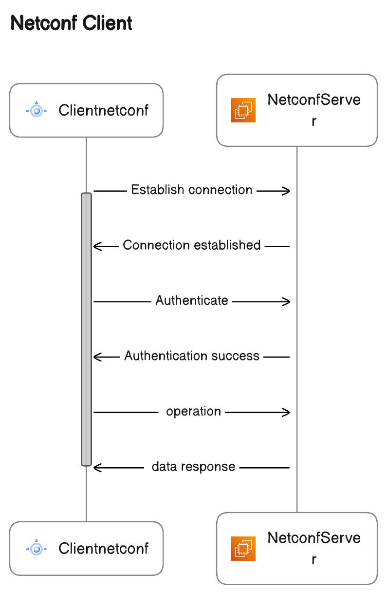

Building Netconf client application from scratch!!
Overview
The Netconf Server and Client applications are like two separate programs. The server uses Apache Mina to handle incoming connections from Netconf clients. It’s responsible for checking if the clients are allowed to connect, and it understands the rules of the Netconf language.The client wants to talk to the server, so it uses Apache Mina to establish a connection. The client tells the server who they are and what they want using the Netconf. The server waits for clients to visit, checks if they are authentication, and listens to Netconf messages. The client, on the other hand, says hello, and asks for specific information using the Netconf, like requesting configuration details. The server and client communicate using Netconf, and Apache Mina helps them understand each other and manage their messages.
Process diagram
{kind=link}
Implementation
Spring Boot Client application
Step1:
Create Maven project
You can create a Maven-based Spring Boot project using the Spring Initializer web tool (https://start.spring.io/) or by using your favorite integrated development environment (IDE) like Eclipse or IntelliJ IDEA.
Step2:
Configure Maven Dependencies
Once you have your project set up, open the pom.xml file and add the required dependencies below are the references.
<dependency> <groupId>org.apache.mina</groupId> <artifactId>mina-core</artifactId> <version>2.1.3</version> </dependency>
Step3:
Write code for Client applicaion
Under src add (.java) file in it.Reffer below package structure to have an idea.
- src/
├─ main/
│ ├─ java/
│ │ ├─ com/
│ │ │ ├─ artifact_id/
│ │ │ │ └─ your_project_name/
│ │ │ │ └─ClientNetconfApplication.java
│ │ │ │ └─NetconfClientHandler.java
Here is the refference code snippets
public class ClientnetconfApplication
{
public static void main(String[] args) throws Exception
{
SpringApplication.run(ClientnetconfApplication.class, args);
System.out.println(">>>>>>>>>>"+" Netconf client application started "+"<<<<<<<<<<");
String serverAddress = "192.168.21.151";
int serverPort = 830;
IoConnector connector = new NioSocketConnector();
connector.getFilterChain().addLast("codec", new ProtocolCodecFilter(new TextLineCodecFactory()));
connector.setHandler(new NetconfClientHandler());
// This is for Connecting to Netconf server
ConnectFuture future = connector.connect(new InetSocketAddress(serverAddress, serverPort));
future.awaitUninterruptibly();
// Getting a session
IoSession session = future.getSession();
// Handle authentication and errors
handleAuthentication(session);
// Perform Netconf <get> operation
performNetconfGetConfigOperation(session);
Thread.sleep(5000);
// Close the session and connector when done
session.closeNow().awaitUninterruptibly();
connector.dispose();
}
private static void handleAuthentication(IoSession session)
{
try
{
// Authenticate using username and password
String username = "admin";//server user name
String password = "utl";//server password
String authenticationMessage = "<rpc message-id=\"2\" xmlns=\"urn:ietf:params:xml:ns:netconf:base:1.0\">\n" +
" <hello>\n" +
" <capabilities>\n" +
" <capability>urn:ietf:params:netconf:base:1.0</capability>\n" +
" </capabilities>\n" +
" <session-id>1</session-id>\n" +
" <username>" + username + "</username>\n" +
" <password>" + password + "</password>\n" +
" </hello>\n" +
"</rpc>";
session.write(authenticationMessage);
}
catch (Exception e)
{
System.err.println("Authentication failed: " + e.getMessage());
e.printStackTrace();
session.closeNow();
}
}
private static void performNetconfGetConfigOperation(IoSession session)
{
try
{
// Create a Netconf <get-config> operation
String getConfigOperation = "<rpc message-id=\"1\" xmlns=\"urn:ietf:params:xml:ns:netconf:base:1.0\">\n" +
" <get-config>\n" +
" <source>\n" +
" <running/>\n" +
" </source>\n" +
" <filter>\n" +
" <person-details xmlns=\"urn:example:person-details\">\n" +
" <name>Prajwal</name>\n" +
" <age>23</age>\n" +
" <address>Bangalore</address>\n" +
" </person-details>\n" +
" </filter>\n" +
" </get-config>\n" +
"</rpc>";
// Log the Netconf operation before sending
System.out.println("Sending Netconf <get-config> operation:\n" + getConfigOperation);
// Send the Netconf <get-config> operation to the server
session.write(getConfigOperation);
}
catch (Exception e)
{
System.err.println("Failed to perform Netconf <get-config> operation: " + e.getMessage());
e.printStackTrace();
session.closeNow();
}
}
}
public class NetconfClientHandler extends IoHandlerAdapter
{
@Override
public void sessionOpened(IoSession session)
{
}
@Override
public void messageReceived(IoSession session, Object message)
{
String receivedMessage = message.toString();
System.out.println("Received message from server: " + receivedMessage);
// Handle the received Netconf message here if required
processNetconfResponse(receivedMessage);
}
private void processNetconfResponse(String netconfResponse)
{
// Log the received Netconf response
System.out.println("Processing Netconf response: " + netconfResponse);
}
@Override
public void exceptionCaught(IoSession session, Throwable cause)
{
System.err.println("Exception caught: " + cause.getMessage());
cause.printStackTrace();
session.closeNow();
}
}
Below is the refference output that you can check
>>>>>>>>>> Netconf client application started <<<<<<<<<<
Sending Netconf <get-config> operation:
<rpc message-id="1" xmlns="urn:ietf:params:xml:ns:netconf:base:1.0">
<get-config>
<source>
<running/>
</source>
<filter>
<person-details xmlns="urn:example:person-details">
<name>Prajwal</name>
<age>23</age>
<address>Bangalore</address>
</person-details>
</filter>
</get-config>
</rpc>
Received message from server: Welcome to the Netconf Server! You are connected.
Processing Netconf response: Welcome to the Netconf Server! You are connected.
By following above methods you can complete spring boot project for netconf client operations.